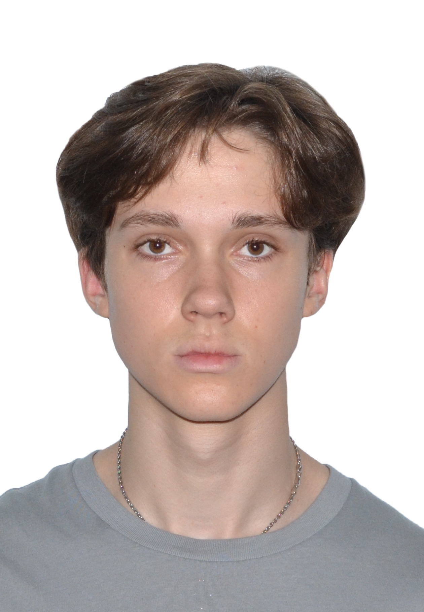

Front-End Candidate for EPAM Campus
"Persistence is the most important algorithm."
Software Engineering Student | Future Front-End Developer
| Technology | Level |
|---|---|
| Web Foundations (HTML5, CSS3) | Active Learning |
| Programming Logic (C++, C#) | Academic Core |
| Computational Logic & Thinking | Foundational Understanding |
| Software Engineering Principles (SDLC, Agile) | Introductory Awareness |
• Soft Skills: I focus on empathy in communication, which helps me understand user needs and work effectively in a team environment.
• Engineering Approach: I am interested in not just "coding", but in the Software Engineering process. I am familiar with basic life cycles of software development and value clean, maintainable logic.